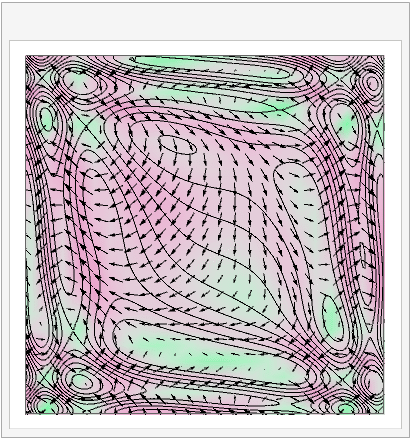

3. Mathematical ideas 3¶
3.1. The directional derivative¶
Here, we make use of the multivariate chain rule for a function \(\phi(x,y,z)\) in the neighbourhood of a point \(\underline{x}\) and we allow variations in an arbitrary direction \(\mathrm{d}\underline{x}\):
This result is called the directional derivative of \(\phi\) in the direction \(\underline{v}\). It is usually assumed that \(\underline{v}\) is a unit vector, so the result may be denoted as follows:
Exercise 3.1
Find the gradient of the function \(f(x,y,z)=xyz\) at the point \(M:(-2,3,4)\).
What is the directional derivative of this function in the direction \(\underline{v}=(3,-4,12)\)?
3.2. The material derivative¶
According to the chain rule for an arbitrary function \(\phi(t,\underline{x})\),
If we put \(\frac{\mathrm{d}\underline{x}}{\mathrm{d}t}=\underline{v}\), which is the velocity following a fluid element along the path of the fluid, then we obtain the material derivative:
The differential operator \(\frac{D}{Dt}\) is called the “material derivative” or “convective derivative”.
The operator \(\underline{v}.\nabla\) gives the directional derivative tangent to \(\underline{v}\). It is often called convection, meaning transport that arises due to the existence of a field (in this case a velocity field). For example, \(\underline{v}.\nabla\underline{v}\) is called convective acceleration.
An illustration of the idea is shown below.

{kind=link}
Suppose that a fluid particle follows the path marked in blue through the potential field \(\phi\), which is indicated by the background colour scheme and equipotential contours shown. The vectors (arrows) shown on the plot depict the instantaneous gradient field of \(\phi\). At each point on the trajectory, the experienced change in \(\phi\) is given by the projection of the particle’s own direction vector \(\underline{v}\) with the gradient field, \(\nabla \phi\), plus the instantaneous change in the potential field \(\phi\) at that point due to time evolution.
The material derivative can also be applied to each element of a vector field \(\underline{\phi}\), to give the change in \(\underline{\phi}\) following the motion of a fluid particle.
An interesting example description of these ideas can be found at https://www.youtube.com/watch?v=l4F2bZgwcpU
3.3. Solutions¶
Solution to : Exercise 3.1
\(\nabla f = \left(yz,xz,xy\right) \Rightarrow (\nabla f)_M=\left(12,-8,-6\right)\)
\(D_{\hat{\underline{v}}}f=\hat{\underline{v}}.(\nabla f)_M = \frac{1}{\sqrt{3^2+4^2+12^2}}\left(3,-4,12\right).\left(12,-8,-6\right)=\frac{-4}{13}\)